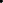
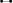
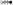
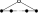
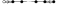
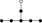
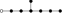
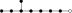
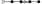
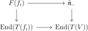

Lie Algebras
6 Classification
To classify root systems, we will really classify root systems with a generic linear functional, and show it doesn’t depend on the functional. Suppose that we have a root system \((V,\Delta )\) and a linear functional \(f\) not vanishing on any root. Then we say a root \(\alpha \) is positive if \(f(\alpha )>0\), and negative otherwise. A positive root is simple if it is not the sum of two positive roots. A highest root \(\theta \) is a root such that \(f(\theta )\) is maximal. \(\Delta _+,\Delta _-\) denote the positive and negative roots, and \(\Pi \) denotes the simple roots. \(\Pi \) is indecomposable if it can’t be nontrivially partitioned into orthogonal sets.
-
-
1. If \(\alpha ,\beta \in \Pi \) are distinct, then \(\alpha -\beta \notin \Delta \) and \((\alpha ,\beta )\leq 0\).
-
2. Every positive root is a nonnegative integral linear combination of simple roots.
-
3. If \(\alpha \in \Delta _+-\Pi \), then for some \(\gamma \in \Pi \), \(\alpha -\gamma \in \Pi \), and when this is true, \(\alpha - \gamma \in \Delta _+\).
-
4. \(\Pi \) is a basis of the lattice generated by \(\Delta \).
-
5. \(\Delta \) is indecomposable iff \(\Pi \) is.
-
6. For an indecomposable root system, there is a unique highest root \(\theta \), and \((\theta ,\alpha )>0,\alpha \in \Delta _+\).
-
-
Proof. \((1)\): If it were in \(\Delta \), by possibly taking its negative, we could assume it is in \(\Delta _+\). But then \(\alpha -\beta + \beta = \beta \) so \(\beta \) isn’t simple. The string condition then implies that \((\alpha ,\beta ) \leq 0\).
\((2)\): Break up a positive root into smaller positive roots until they are all simple.
\((3)\): \(\alpha = \sum _i c_i\gamma _i\) where \(\gamma _i\) are positive simple roots, and \(c_i>0\). we have that \(\sum _i c_i\langle \alpha |\gamma _i\rangle = \langle \alpha |\alpha \rangle = 2\), so \(\langle \alpha |\gamma _i\rangle \) is positive for some \(\gamma _i\), so \(\gamma _i-\alpha \in \Delta \). If \(\gamma -\alpha \) is ever in \(\Delta _+\), then since \(\alpha \) is too, \(\gamma \) cannot be simple. Thus \(\alpha -\gamma \in \Delta _+\).
\((4)\): Since \(\Delta \) spans the lattice, so does \(\Delta _+\), so by \((2)\), \(\Pi \) does too. Suppose there is a relation \(\sum c_i \gamma _i = \sum c'_j \gamma '_j\) where \(c_i,c'_j\geq 0\), and \(\gamma _i,\gamma _j'\) are a disjoint set of simple roots. Then \((\sum c_i \gamma _i,\sum c'_j \gamma '_j) \leq 0\) by \((1)\) so the coefficients are \(0\).
\((5)\): If \(\Gamma \) is decomposable, the string condition and \((2),(3)\) implies that any element in \(\Delta _+\) is decomposable into things in exactly one of the decompositions of \(\Gamma \), showing \(\Delta \) is decomposable. Conversely if \(\Delta \) is decomposable, as noted earlier the string condition shows the decomposition is orthogonal, implying that that the simple roots decompose orthogonally too.
\((6)\): If \(\theta \) is a highest root and \(\alpha \) a positive root, then \(\theta +\alpha \notin \Delta \) because it is larger than \(\theta \). Then the string condition implies \((\theta ,\alpha )\geq 0\). By \((1),(2)\), the set of \(\gamma \in \Pi \) orthogonal to \(\theta \) and the set of \(\gamma \in \Pi \) in the decomposition of \(\theta \) are a decomposition of \(\Pi \), so by indecomposability we must have \((\theta ,\gamma )>0\) for \(\gamma \in \Pi \) and hence for all elements of \(\Delta _+\).
But if \(\theta _1\neq \theta _2\) are highest roots, \(f(\theta _1-\theta _2)\) = 0 so it cannot be a root and \(f(\theta _1+\theta _2)>f(\theta _1)\) so it isn’t a root. the string condition then says \((\theta _1,\theta _2) = 0\), but this was shown to not be possible. □
-
Proof. The first,second, and last claim are clear, the third follows from the previous theorem, and the fourth follows from Sylvester’s criterion because the Cartan matrix is the inner product matrix except with the rows rescaled. □
\(\tilde {A}\) clearly satisfies the same properties as \(A\) except the determinant is \(0\).
-
Definition 6.5. An abstract Cartan matrix is one satisfying the properties of Lemma 6.3.
A Cartan matrix is indecomposable iff it is not the direct sum of Cartan matrices. Clearly a root system is indecomposable iff its Cartan matrix is.
Because of this classification and the fact that every matrix is determined by its graph of \(2x2\) principal submatrices, the Cartan matrix is completely encoded by a Dynkin diagram, where there is a vertex for every diagonal entry and an edge corresponding to each \(2x2\) principal submatrix.
| \(\begin {bmatrix} 2 & 0 \\0 & 2 \end {bmatrix}\) |  |
| \(\begin {bmatrix} 2 & -1 \\-1 & 2 \end {bmatrix}\) |  |
| \(\begin {bmatrix} 2 & -1 \\-2 & 2 \end {bmatrix}\) | |
| \(\begin {bmatrix} 2 & -1 \\-3 & 2 \end {bmatrix}\) |
An edge indicates two arrows that are not orthogonal. The double and triple edges indicate that one root is longer, and they point to the shorter root.
Extended Cartan matrices gives an extended Dynkin diagram, where we mark the highest root as special. In the case of \(A_1\) the extended Cartan matrix consists of all \(2\)s, so it is exceptional, and we denote it by .
-
Example 6.6.1 (Extended Dynkin Diagrams). Here is a list of the extended Dynkin diagrams of the thus-far constructed root systems. We will soon see that this list is complete.
\(A_1\) \(A_n\)  \(B_n\) \(C_n\)  \(D_n\) \(E_6\)  \(E_7\)  \(E_8\)  \(F_4\)  \(G_2\) Now let’s see why these are as above. We will always choose \(f\) so the \(e_i\) are positive and \(e_i\) is much larger than \(e_{i+1}\).
-
• \(A_n\):, The roots are \(e_i-e_j\) (we drop the \((-)^*\) in the notation). Then the simple roots are \(e_i-e_{i+1}\), and the largest root is \(e_1-e_n\).
-
• \(B_n\): The roots are \(\pm (e_i +e_j),e_i - e_j, \pm e_i\). Then the simple roots are \(e_n, e_{i}-e_{i+1}\), and the largest root is \(e_1+e_2\).
-
• \(C_n\): The roots are \(\pm (e_i+e_j),e_i-e_j, 2e_i\). The simple roots are \(2e_n, e_{i}-e_{i+1}\), and the largest root is \(2e_1\).
-
• \(D_n\): The roots are \(\pm (e_i+e_j), e_i-e_j\). The simple roots are \(e_i-e_{i+1}, e_n+e_{n-1}\) and the largest root is \(e_1+e_2\)
-
• \(E_8\): The roots are \(\pm (e_i+e_j), e_i - e_j\) and things of the form \(\frac {1}{2}(e_1\pm \dots e_8)\) where there are an even number of minus signs. The simple roots are then \(e_i-e_{i+1}\) for \(i>1\), \(e_8+e_7, \frac 1 2 (e_1+e_8-\sum _2^6 e_i)\), and the largest root is \(e_1+e_2\).
-
• \(E_7\): The roots are \(e_i-e_j, i \neq j\) and things of the form \(\frac {1}{2}(e_1\pm \dots e_8)\) where the number of minus signs is divisible by four. The simple roots are then \(e_i-e_j\) for \(i>1\) and \(\frac 1 2 (\sum _{1,6,7,8} e_i - \sum _{2,3,4,5}e_i)\), and the largest root is \(e_1+e_2\).
-
• \(E_6\): The roots are \(e_i-e_j\) such that if either of \(\{i,j\}\cap \{7,8\}\) is \(\{7,8\}\) or \(\phi \), as well as things of the form \(\frac {1}{2}(e_1\pm \dots e_8)\) where the number of minus signs is divisible by four, \(e_7,e_8\) have opposite signs. The simple roots are \(e_i-e_{i+1}\) for \(i \neq 1,7\) and \(\frac 1 2 (\sum _{1,5,6,8}e_i-\sum _{2,3,4,7}e_j)\) and the largest root is \(e_1-e_2\).
-
• \(F_4\): The roots are \(\pm e_i, \pm (e_i + e_j), e_i-e_j, \pm \frac 1 2 (e_1\pm \dots e_4)\). The simple roots are \(\frac {1}{2} (e_1-e_2-e_3-e_4), e_4,e_2-e_3,e_3-e_4\), and the largest root is \(e_1+e_2\).
-
• \(G_2\): The roots are \(\pm (e_i + e_j), e_i - e_j, \pm (2e_i-e_j-e_k)\). The simple roots are \(e_2-e_3, e_1-2e_2+e_3\), and the largest root is \(2e_1-e_2-e_3\).
-
-
Proof. Every subdiagram of a Dynkin diagram is a Dynkin diagram. Moreover, any extended Dynkin diagram is not a Dynkin diagram. Finally, for any multiple edge on a vertex of degree \(1\) on a Dynkin diagram, reversing an isolated set of multiple edges preserves being a Dynkin diagram since it preserves determinants of principle submatrices. Reducing an edge’s multiplicity preserves being a Dynkin diagram since it increases the determinant of the principal submatrices. These observations essentially prove the theorem. Namely, the extended Dynkin diagrams constructed obstruct any other Dynkin diagrams from existing via these observations.
To actually work this out, \(A_n\) obstructs cycles from existing, so all Dynkin diagrams are trees. \(G_2\) obstructs triple edges from existing anywhere else, \(F_4\) obstructs double edges from appearing not on a leaf. \(C_n\) obstructs double edges from appearing multiple times elsewhere, \(B_n\) obstructs branching when there is a double edge. \(D_n\) obstructs double branching, and \(E_6,E_7,E_8\) obstruct branches from getting too long. □
Observe that the list is a bit redundant. Namely, \(A_1=B_1=C_1\), \(D_2 = A_1 \oplus A_1\), \(B_2 = C_2\), \(D_3 = A_3\), but the rest are not redundant. Sometimes these are called exceptional isomorphisms.
We will now show that this classification also classifies simple Lie algebras and indecomposable root systems as well. First we will show nothing depends on \(f\), and that we can recover the root system from the Cartan matrix.
There is another way of thinking about root systems. Namely, reflection across the orthogonal plane to \(a\) is given by the equation \(r_a(v) = v-\langle a|v\rangle a\). One then sees from the string condition that \(\Delta \) is closed under reflection by any element in it (this condition is actually equivalent to it by checking what happens in dimension \(2\)). For the root system of a Lie algebra, one can see the reflection arising from the action of the element \(\tau \) of the \(\msl _2\)-triple associated to the root. The group generated by \(r_\alpha , \alpha \in \Delta \) is called the Weyl group and denoted \(W(\Delta )\). It is finite since it acts faithfully on \(\Delta \). The fact that there are so many symmetries already suggests \(f\) doesn’t really do much.
If \(\gamma _1,\dots ,\gamma _r\) are the simple roots, let \(s_i = r_{\gamma _i}\); these are called simple reflections. Define the height of a positive root \(\alpha \) to be \(\hgt (\alpha ) = \sum _i c_i\) where \(\alpha = \sum _i c_i \gamma _i\).
-
-
1. \(s_i\) preserves \(\Delta _+-\gamma _i\).
-
2. If \(\alpha \in \Delta _+-\Pi \), there is an \(i\) so that \(\hgt (s_i(\alpha )) < \hgt (\alpha )\).
-
3. There is a sequence of simple reflections taking any positive root to an element of \(\Pi \) such that at every step it is still positive.
-
4. \(W\) is generated by simple reflections.
-
-
Proof. \((1)\): Such an element looks like \(\sum _jc_j \gamma _j\) where \(c_j > 0\) for some \(j \neq i\). \(\gamma _j\) are linearly independent and everything is either a strictly positive or negative linear combination of them, so the result follows.
\((2)\): \((\alpha ,\alpha )>0\), and \(\alpha \) is a positive sum of \(\gamma _i\)s so \((\alpha ,\gamma _i)>0\) for some \(i\). Then \(s_i(\alpha )\) has smaller height.
\((3)\): Follows immediately from \((2)\).
\((4)\): By \((3)\) we can get between from element of \(\Delta \) and an element \(\gamma _i\) of \(\Pi \) via simple reflections. Now conjugating \(s_i\) by this composite of simple reflections gives the reflection by that element. □
We can consider \(V-\cup _{\alpha \in \Delta }T_\alpha \) where \(T_\alpha \) is the plane perpendicular to \(\alpha \). The components of this are called the Weyl chambers. The Weyl group acts on these chambers since \(r_\alpha (T_\beta ) = T_{r_\alpha (\beta )}\).
-
Proof. Since anything is a positive or negative learn combination of \(\Pi \), the set described doesn’t contain anything orthogonal to anything in \(\Delta \). Moreover its boundary clearly consists of things that do. □
A word in the \(s_i\) is reduced if it isn’t equivalent to a shorter word in \(W\). The length of a reduced work representing \(w \in W\) is called its length, denoted \(l\).
-
Proof. The sequence \(\beta _k = s_{i_k}\dots s_{i_{t-1}}(\gamma _{i_t})\) at some point switches from negative to positive, which can only happen by the previous theorem if \(\beta _{m+1}\) is \(\gamma _{i_m}\). But then \(w=s_{i_{m+1}}\dots s_{i_{t-1}}\) satisfies \(ws_{i_t}w^{-1} = s_{i_m}\) which gives the result after multiplying by \(w\) on the right. □
-
Proof. To see it acts transitively on chambers, make a generic path between two chambers and everytime you cross a wall, do a reflection. By realizing the reflections on \(f\) and on \(\Pi \), we see that the chambers correspond to sets of simple roots for various choices of \(f\). To see that the action is simple, suppose that \(w\in W\) fixes \(\Pi \). If \(w = s_{i_1}\dots s_{i_{t}}\), then the exchange lemma shows it isn’t reduced. Thus \(w\) must be trivial. □
-
Proof. The Cartan matrix essentially encodes the inner product on \(\Pi \) which form a basis for the vector space. Thus we can recover these vectors, but by using the reflections by these vectors, we can recover everything. To see this always gives a root system, note that finiteness follows from everything lying on a lattice and being bounded. Most of the conditions are easy, and since it is closed under reflections of the generators and generated by them, it is closed under reflections of all elements. □
Recall \(\mg \) semisimple is \(\mh \oplus \bigoplus _{\alpha \in \Delta }\mg _{\alpha } = \mg \oplus \mn _+ \oplus \mn _- \). where \(\mn _+,\mn _-\) are the nilpotent subalgebra of positive/negative root spaces. We would like to find a description in terms of the Cartan matrix \(A_{ij}\). Let \(\gamma _1\dots \gamma _r\) be the simple roots, and let \(e_i,f_i,h_i\) be \(\msl _2\)-triples corresponding to \(\gamma _i\). Note that they generate the algebra, are linearly independent, and satisfy the following relations called the Chevalley relations:
-
1. \([h_i,h_j]=0\)
-
2. \([h_i,e_j]=\langle \gamma _i|\gamma _j\rangle e_i\)
-
3. \([h_i,f_j]= -\langle \gamma _i|\gamma _j\rangle f_i\)
-
4. \([e_i,f_j]= \delta _{ij}h_i\)
Note that these relations come from entries in the Cartan matrix: namely \(\langle \gamma _i|\gamma _j\rangle \) is \(A_{ij}\). Let \(\tilde {\mg }\) denote the free Lie algebra presented by these relations. Let \(\tilde {\mn }_+,\tilde {\mn }_-\) denote the subalgebras generated by \(e_i\) and \(f_i\) respectively. When the Cartan matrix was constructed from a Lie algebra, there is a natural surjective map to \(\tilde {\mg } \to \mg \). Note that the construction is symmetric in the \(f_i,e_i\): we can swap the two and replace \(h_i\) with its negative and the same relations hold. This means we have to prove half as many things about the construction. We will still use \(\gamma _i \in \Pi \) to denote the weights of the span of \(\ad (h_i)\) on \(e_i\).
Consider the \(T(V)\) the tensor algebra on the vector space \(V\) generated by \(v_1,\dots , v_r\). This should be thought of as the universal enveloping algebra of \(\tilde {\mg }/(\tilde {\mn }_+\oplus \mh )\). Of course this doesn’t make sense since the quotient isn’t by an ideal, but it is the quotient as an algebra and can probably be thought of as the invariant differential operators on the quotient formal group. We can produce an action of \(\tilde {\mg }\) on \(T(V)\) as follows: \(h_k\) sends \(v_{i_1}\dots v_{i_s}\) to \(-(\sum _1^sA_{k,i_j}\rangle ) v_{i_1}\dots v_{i_s}\), \(f_k\) sends \(v_{i_1}\dots v_{i_s}\) to \(v_k v_{i_1}\dots v_{i_s}\), and \(e_k\) sends \(v_{i_1}\dots v_{i_s}\) to \(\sum _1^s (\delta _{k,i_j}v_{i_1}\dots \hat {v_{i_j}}\dots v_{i_s})\). A straightforward calculation shows that this satisfies the Chevalley relations, so is indeed an action.
For the next lemma, it will be convenient to introduce notation. \(e(s),f(s)\) denote an iterated bracket of \(s\) of the \(e_i,f_i\) respectively, and \(\Sigma \) to denote a linear combination. \(f(0)\) or \(e(0)\) will mean the \(h_i\).
-
-
1. \(\tilde {\mg } = \tilde {\mn }_+\oplus \tilde {\mn }_-\oplus {\mh }\)
-
2. \(\mn _+,\mn _-\) are free on the \(e_i,f_i\) and \(\tilde {\mn }_+ = \oplus _{\alpha \in \QQ _+} \mg _\alpha , \tilde {\mn }_- = \oplus _{\alpha \in \QQ _+} \mg _{-\alpha }\) where \(\QQ _+\) is \(\ZZ _{\geq 0} \Pi -0\) and \(\alpha \) is the weights of the \(\mh \) action.
-
3. If \(I\) is an ideal in \(\tilde {\mg }\) then \(I = \mh \cap I \oplus \bigoplus _\alpha \mg _\alpha \cap I\).
-
4. Maximal ideals in \(\tilde {\mg }\) correspond to components of the Dynkin diagram.
-
-
Proof. \((1)\): The action on \(T(V)\) gives a Lie algebra homomorphism \(\tilde {\mg } \to T(V)\). First note that the \(h_i\) are linearly independent since the Cartan matrix is nonsingular. The Jacobi identity (equivalent to the fact that \(\ad \) is a derivation) \([h,e(s)]=[h,[e(1),e(s-1)]] = [[h,e(1)],e(s)]+[e(1),[h,e(s-1)]]\) shows via induction on \(s\) that for an iterated bracket of \(e_{i_1},\dots , e_{i_s}\) that \(\ad h_k\) has eigenvalue \(\sum _1^sA_{k,i_j}\), and by symmetry the same is true for \(f_i\) with the opposite eigenvalue.
Next we can see inductively that \([f(s),e(s')]\) is a linear combination of \([f(s-s')]\) when \(s\geq s'\geq 0\) via \([f(s),e(s')] = [f(s),[e(s'-1),e(1)]] = [[f(s),e(s'-1)],e(1)]+[e(s'-1),[f(s),e(1)]]\) reducing to \(s'=1\) and \([f(s),e(1)] = [[f(s-1),f(1)],e(1)] = [[f(s-1),e(1)],f(1)]+ [f(s-1),[f(1),e(1)]]\) reducing to \(s=1\), where it follows from relation \((4)\). The same statement holds when \(e,f\) are switched.
Thus \(\tilde {\mn }_+ + \tilde {\mn }_- + \mh \) is a subalgebra, but it isn’t clear that the sum is direct. However, by nondegeneracy we can find \(h \in \mh \) such that its eigenvalue on \(e(s)\) is positive, and hence on \(f(s)\) is negative. Moreover \([\mh ,\mh ]=0\) so the eigenspace decomposition of \(h\) separates these subalgebras.
\((2)\): There is a commutative square

where the left vertical map is the canonical action on the universal enveloping algebra. Since the left arrow is injective and the bottom arrow is an isomorphism, the top arrow is injective. But it is also clearly surjective, so it is an isomorphism. Thus \(\tilde {\mn }_+ \) is free and by symmetry \(\tilde {\mn }_- \) is too. The second statement was already proven in \((1)\).
\((3)\): Given an element \(x \in I\), keep acting by the elements of \(\mh \). Since \(\mh \) acts semisimply, some linear combination of the \(\ad (\mh )^i x\) will be the projection onto the various eigenspaces of \(x\).
\((4)\): Consider any proper ideal of \(\tilde {\mg }\). By \((3)\) if its intersection with \(\mh \) wasn’t \(0\), it would have to contain all nonzero weight spaces of its intersection in \(\mh \), which would contain atleast one \(f_i,e_i\). Thus it would contain \([e_i,f_i]=h_i\), for which the eigenvalue doesn’t vanish for all neighbors of \(\gamma _i\). Continuing this way since it is indecomposable, it would have to contain the whole component. Thus the union of all ideals containing the part of \(\mh \) orthogonal to some component of a Dynkin diagram is a maximal ideal, and moreover all maximal ideals must be contained in one of these. □
If the Cartan matrix is indecomposable, there is a unique maximal ideal, and if we already know that the Cartan matrix comes from a simple Lie algebra, the quotient has to be that simple Lie algebra. The only information this really gives us is knowing the quotient is finite-dimensional. However we will now prove that we should apriori expect the quotient to be finite dimensional.
-
Proof. We can make a reduction to the case of an indecomposable Cartan matrix by observing that a splitting of the Cartan matrix splits everything involved \(\mh ,\tilde {\mg },\tilde {\mn _+},\tilde {\mn _-}\). In this case when it is simple, if we can find a proper ideal with quotient finite dimensions \(>1\), then the quotient is simple, and \(\mh \) is clearly self normalizing with \(\mg _{\alpha }\) are its weight spaces, so we would be done. The quotient contains cannot be \(1\)-dimensional since if an ideal contains any of the \(e_i,f_i,h_i\), it must contain everything.
To prove finite-dimensionality, we first prove that when \(i\neq j\) and \(k\) is arbitrary, \(\ad e_k (\ad f_i)^{1-A_{ij}}(f_j)=0\). If \(k\neq i\), this is equal to \((\ad f_i)^{1-A_{ij}}\ad e_k(f_j) = (\ad f_i)^{1-A_{ij}}\delta _{jk} h_j = (\ad f_i)^{-A_{ij}}A_{ij}f_i = 0\). If \(k = i\), \(e_i,f_i\) are part of an \(\msl _2\)-triple, so it follows from representation theory of \(\msl _2\) that \(\ad e_i (\ad f_i)^{t}(f_j)= t(A_{ik}-t+1)(\ad f_i)^{t-1}(f_j) = 0\) by our choice of \(t\).
Now let \(J_+,J_-\) be the ideals of \(\tilde {\mn }_+,\tilde {\mn }_-\) generated by \((\ad f_i)^{1-A_{ij}}(f_j)\) and \((\ad e_i)^{1-A_{ij}}(e_j)\). By what was just shown, these are also ideals of \(\tilde {\mg }\). Let \(J\) be their sum. I claim \(\tilde {\mg }/J\) is finite dimensional. Note that \(\ad e_i,\ad f_i\) act locally nilpotently on this, since they do on generators and \(\ad \) is a derivation. Now we still have for each \(i\) the \(\msl _2\)-triple associated to \(e_i,f_i,h_i\). Then \(\tilde {\mg }/J\) is a sum of finite-dimensional modules for these \(\msl _2\)-triples since the \(e_i,f_i\) act locally nilpotently.
Thus we can consider the action of \(\tau _i\) from the representation theory of \(\msl _2\) which is an involution swapping positive and negative eigenspaces, implementing the Weyl group reflection of the corresponding simple root on \(\ZZ \Pi \). We know that \(\tilde {\mg }_{k\gamma _i}\) is \(1\)-dimensional for \(k = \pm 1\) and \(0\)-dimensional for \(|k|>1\) so the same is true for anything connected to these by the Weyl group action. In particular all the roots of the corresponding root space have \(1\)-dimensional eigenspaces. Now consider \(\alpha \) in \(\QQ _+\coprod -\QQ _+\) that is not a multiple of a root. then the plane orthogonal to \(\alpha \) isn’t contained in any of the boundaries of the Weyl chambers, and we can find \(\mu \in \ZZ \Pi \) orthogonal to it on the interior of a Weyl chamber. Then acting by an element of the Weyl group \(w\) we can move \(\mu \) to the Weyl chamber corresponding to \(\Pi \). Then \(w(\mu )\) is a sum of positive multiples of the \(\gamma _i\) and since it is orthogonal to \(w(\alpha )\), \(w(\alpha )\) must contain both positive and negative terms in its decomposition as \(\sum _i c_i \gamma _i\). But then \(0=\tilde {\mg }_{w(\alpha )} \cong \tilde {\mg }_{\alpha }\). Thus the quotient is finite-dimensional, and in fact we have proven \(J\) is the maximal ideal. □